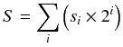

Time Limit: 5 sec
Advanced Computer Music社（ACM社）は， あらかじめプログラムされたリズム通りに音楽を演奏する リズムマシーンを販売していた． ある時，ACM社は新しいリズムマシーンを開発して売り出そうとしていた． ACM社の旧製品は同時に1つの音しか鳴らすことができなかったのに対し， 新製品では最大で8つの音を同時に鳴らせるようになるというのが 一番の目玉機能であった． 今まで複数の旧製品を利用して演奏する必要のあった曲が 新製品1台で済むようになるので， ACM社は新製品への移行を推進させるために， 複数の旧製品向けのリズムパターンを1つの新製品向けのリズムパターンに 変換するプログラムを作ることにした．
ACM社のリズムマシーンでは，同時にどの音を鳴らすかを2桁の16進数で表現する．
ACM社のリズムマシーンは8つの異なる音を鳴らすことが可能で，
それぞれの音には0から7の番号が割り当てられている．
あるタイミングにおいて，音 i (0 ≤ i < 8)
を鳴らす場合を si = 1，
鳴らさない場合を si = 0 とする．
このとき，それぞれの音を同時に鳴らしたような和音を

という値で表し，
この値を2桁の16進数表記で表した「和音表現」
がリズムパターンの中で用いられる（16進数の英字は大文字を用いる）．
例えば，音0, 6, 7 を同時に鳴らすような和音は
S = 20 + 26 + 27
= C1(16)
となるから “C1” と表現され，
また何も鳴らさないような「和音」は
“00” と表現される．
リズムパターンは，上記のような和音表現を1つ以上並べたものとして与えられる．
あるリズムパターン文字列は，1小節内の演奏パターンを示している．
それぞれの和音を鳴らすタイミングを小節内の相対位置
t (0 ≤ t < 1)
で表現することにする．
k 個の和音表現からなるリズムパターン文字列は，
小節を k 等分しそれぞれの和音を順に
t = 0/k, 1/k, ...,
(k−1)/k のタイミングで演奏するような
リズムパターンを表している．
例えば，リズムパターン “01000003” は，
t = 0/4 のタイミングで音0を演奏し，
t = 3/4 のタイミングで音0, 1を演奏することを表す．
また，リズムパターン “00”
は小節内で何も音を鳴らさないことを表す
（リズムパターンには和音表現が1つ以上必要であることに注意せよ）．
旧製品は同時に1つの音しか鳴らせないため，
旧製品向けのリズムパターン文字列内には
“00”,
“01”,
“02”,
“04”,
“08”,
“10”,
“20”,
“40”,
“80”
のいずれかの和音表現しか現れない．
旧製品向けのリズムパターンを N 個
(1 ≤ N ≤ 8) 受け取り，
それらのリズムパターンを同時に演奏するような
新製品向けのリズムパターンを出力するプログラムを書いて欲しい．
与えられる N 個のリズムパターンにおいて， まったく同じタイミングで同じ音が演奏されることはないと仮定してよい．
最初の行にデータセットの数が与えられる． 次の行以降には，それぞれのデータセットが順に記述されている． データセットの数は 120 を越えないと仮定してよい．
それぞれのデータセットは以下のような形式で与えられる．
Ri (1 ≤ i ≤ N) はそれぞれ旧製品向けのリズムパターンである．
各リズムパターンは最大で2048文字（1024和音表現）である． 与えられるリズムパターンは必ずしも最短の表現になっていないことに注意せよ．
各データセットについて，与えられた N 個のリズムパターンを
すべて同時に演奏するような最短のリズムパターンを生成し，
1行で出力せよ．
そのようなリズムパターンが2048文字を越える場合，
リズムパターンの代わりに “Too complex.”
という文字列を出力せよ．
5 2 01000100 00020202 2 0102 00000810 1 0200020008000200 5 0001 000001 0000000001 00000000000001 0000000000000000000001 1 000000
01020302 01000A10 02020802 Too complex. 00